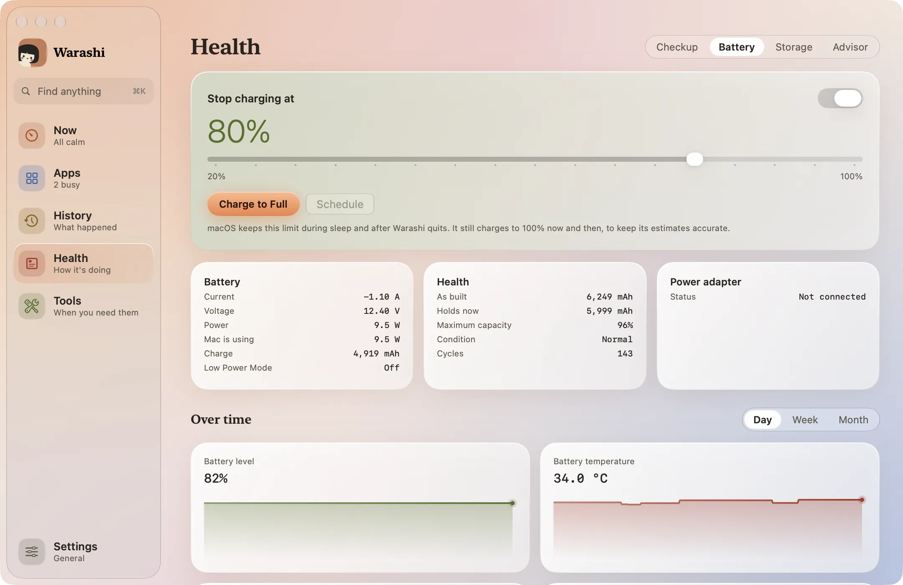
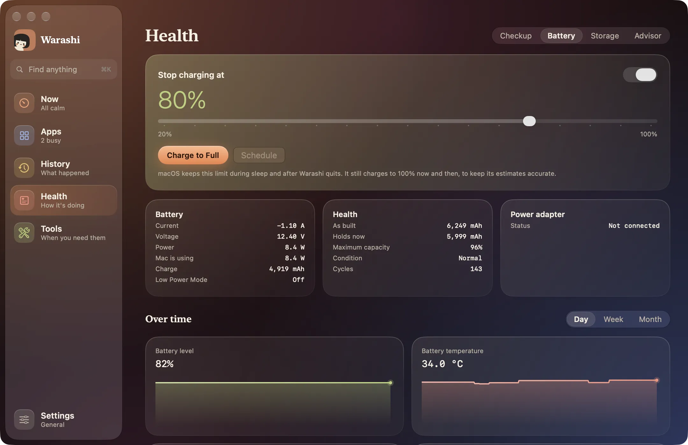

バッテリーは、バッテリーのあるMacで状態の中にあるタブです。バッテリーの調子を表示し、充電を止めるレベルを選べます。ほとんど電源につないだまま使うバッテリーを、より長く健康に保てます。


好きなレベルで充電を止める
- オンにする
充電の上限をオンにして、スライダをドラッグします。5%刻みで動き、100%は上限なしです。下の行に今の状態が表示されます：80%で維持中、80%まで充電中、80%まで下降中、電源接続時に80%で停止します。
- 今回だけ満充電にする
長い外出の前には、満充電にするを押します。今回だけ100%まで充電し、その後は上限に戻ります。メニューバーウインドウとノッチの充電量の操作も同じ働きをします。
- または予約する
予約を押すと、日時を指定してフル充電または上限を選べます。たとえば、出かける前の明日07:00などです。その時刻にMacがスリープしていた場合は、復帰したときに実行されます。
同じ操作はチェックアップ、ツール、そして追加すればメニューバーウインドウにもあります。
対応するMacとレベル
- 充電上限には、Apple silicon搭載MacでmacOS 26.4以降が必要です。Warashiは、macOS自体が提供しているのと同じ80%〜100%の上限を使います。
- 80%未満、20%までの上限には、macOS 26.7以降とシステムヘルパーが必要です。80%未満では、WarashiはAppleが公開していない設定を使います。システム設定に見慣れない値が表示されることがあり、macOSのアップデートで使えなくなる可能性もあります。
- macOSは、Macのスリープ中もWarashiの終了後も上限を保ちます。推定値を正確に保つため、ときどき100%まで充電することがあります。
ページのそのほかの部分
バッテリー（充電量、残り時間、温度）、その状態（最大容量、充放電回数、コンディション）、電源アダプタのカードがあります。その下の経時変化では、日・週・月ごとに、バッテリー残量、温度、電力、最大容量、充放電回数、そして電力を多く使ったアプリをグラフで表示します。
うまくいかないときは
- このMacでは上限を設定できないと表示される： macOS 26.4以降にアップデートしてください。
- スライダが80%から始まる： それより低い上限にはmacOS 26.7以降が必要です。26.7以降では、確認が表示されたらシステムヘルパーをオンにしてください。
- 上限を超えて充電された： macOSは補正のためにときどき100%まで充電します。または「満充電にする」を押した場合です。
詳しくはトラブルシューティングをご覧いただくか、adam@warashi.appまでメールでお問い合わせください。